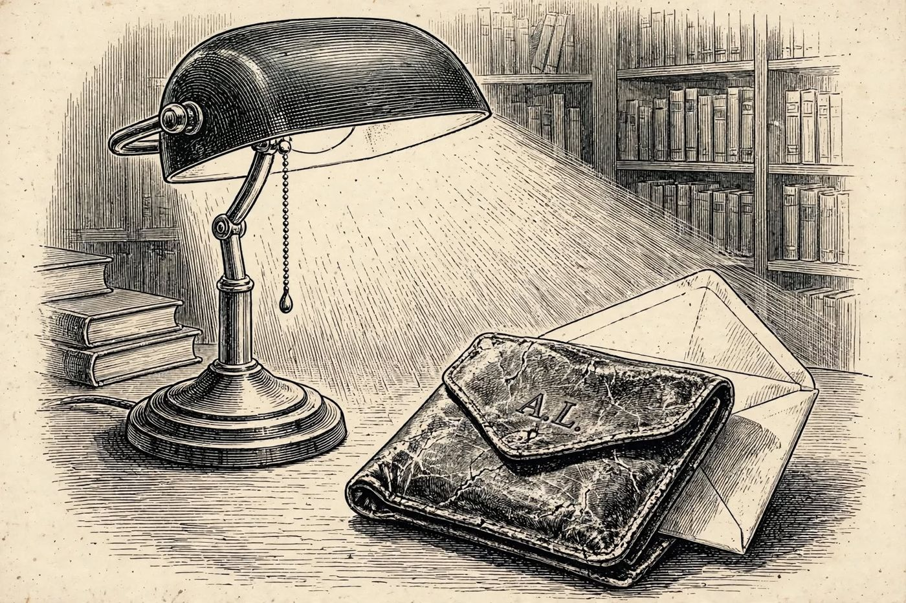

22 de diciembre
I.S.
Libro · págs. 92-95
Audio del día
Transcripción
«Dos papeles que nadie debía juntar… Una carta escrita en 1911 y una copia certificada de un certificado de tutela, de Lausana. Ha llegado muy lejos, detective, pero aún no sabe de quién son esas dos iniciales. Lea la carta despacio. A veces quien escribe esconde algo en la forma de empezar cada párrafo. Y compare las fechas y los nombres con los de los huéspedes. Alguien en esta casa lleva años mintiendo sobre quién es.»

Intenta resolverlo primero. Abre solo lo que necesites, en este orden.
1Pista sutil
Lee verticalmente la primera letra de cada uno de los 7 párrafos de la carta del 14 de febrero de 1911 (I, N, G, R, I, D, S).
2Comprobación parcial
El acróstico de la carta forma la frase INGRID S. El certificado de tutela confirma que la menor nació el 14 de marzo de 1902 en Lausana.
3Pista fuerte
Las siete letras son I, N, G, R, I, D, S. En la Parte 2, solo un huésped nació el 14 de marzo de 1902 y en Lausana, y lleva el apellido de la tutora del certificado.
4Solución oficialSpoiler si no lo has intentado
Acróstico: I-N-G-R-I-D-S → INGRID S.
Coincidencia de datos: Ingrid Falk nació el 14 de marzo de 1902 en Lausana, coincidiendo exactamente con el documento de tutela de la hija de Irene Sorel.
Para el desenlace de la historia, vuelve al libro: la sección de soluciones está al final.